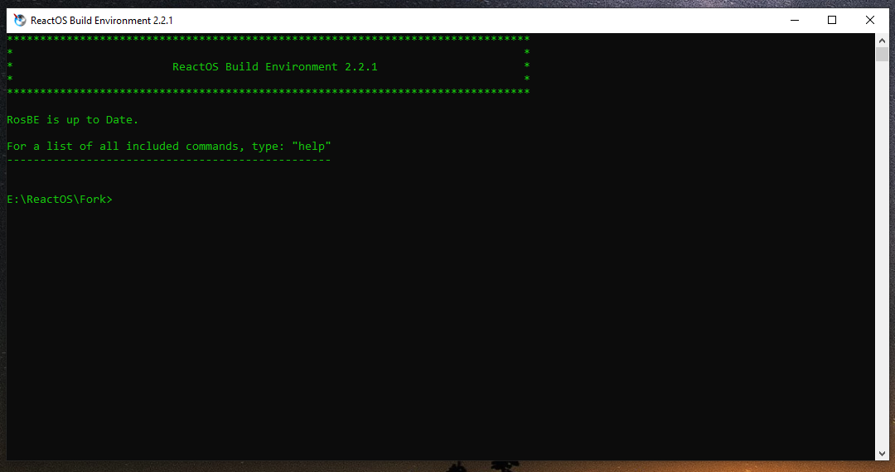
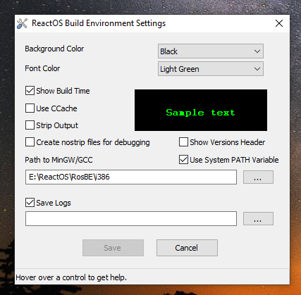

Getting the ReactOS Build Environment
🢂 What is RosBE?
ReactOS Build Environment (or RosBE by its acronym) is a software environment consisting of a compiler, GCC (GNU C Compiler), and various tools to compile ReactOS. RosBE is both ported for GNU/Linux
and MacOS environments and it can be used to build standalone modules or applications as well without having to build the whole operating system (which I will explain later). In this tutorial I
only take into account how to build ReactOS within Windows platform! It is required that you fork and clone the ReactOS repository, if you haven't done it so please consult the
Fork/Clone section of the tutorial.
🢂 Getting RosBE
Obtaining RosBE can be done from the Wiki article pointed at the top of the tutorial. As you begin the installation of RosBE you'll be greeted with this screen.

Proceed with the installation steps at specifying the installation directory for RosBE and the directory source of ReactOS code. For a structured and easier way to store your
ReactOS related work and stuff I'd recommend to create a ReactOS folder only for storing your developmnent infrastructure. For the start you begin by creating 3 separate directories
within the ReactOS folder, namely Compiled, Fork and RosBE with Fork containing the source code of ReactOS. You will have something like this (you can ignore
other directories)...

Once you step further to the installation you'll get through this screen.

While the component options are self-explanatory about their purpose, one thing is to bring into attention is the PATH environment variable. MSVC (Microsoft Visual C++) can be used to compile ReactOS
alongside with RosBE as RosBE is needed for specific CMake definitions and other ReactOS related stuff. The RosBE installer will add the path to main RosBE's files to the PATH environment variable
which is compulsory for users who want to compile ReactOS with MSVC.
Building ReactOS
When the installation is finished the RosBE installer will create shortcuts (one for the x86 GCC compiler and the other for AMD64) for you if you prompted the installer to do so under component options.
As currently the ReactOS 64-bit development is in progress we'll only focus on how to build a 32-bit system. Launch RosBE and you'll be greeted with this screen.

Upon launching RosBE points to the directory where the ReactOS source code is located. In case you have submitted a wrong location you can correct it by using the chdefgcc command by specifying
new path location to the ReactOS source code directory.
As we have discussed before it is recommended that you have a special ReactOS folder to keep all the stuff, including RosBE. In this folder you must have created a Compiled directory for compiled ReactOS
and binary modules. Go to the compiled directory and type the following command line.
?:\path\to\reactos\source\tree\configure.cmd
?:\path\to\reactos\source\tree is the path of where your ReactOS source code directory is and configure.cmd is the executable that prepares the ReactOS files for configuration.
Configuration process takes up usually less than a minute. As it is done the terminal prompt should look like this.

You can build ReactOS in 3 formats, BootCD, LiveCD and HybridCD. At the very same place you're in (that is the compiled directory) you type the following command line.
ninja bootcd
In this instance RosBE begins compiling ReactOS as BootCD format, that is, it consists of the 1st stage setup installation when booting and 2nd setup stage (graphical setup). With the ninja command
you can also build separate modules like applications and other components. Building ReactOS can take up several minutes to a hour depending on the specifications of your PC namely the storage drive and CPU.
The compile speed process can be a bit slower on HDDs.
Changing settings of RosBE
The RosBE installer creates a folder in the start menu containing the executables of RosBE and options. Under the same directory click on "Options", you'll be greeted with this screen.

Alternatively you can type options in the command prompt to launch the "Options" dialog box. In the options you can enable CCache for faster compiling (caching the compile contents that were
created previously for the first time), changing the background and text colours and so forth.

{kind=link}
{kind=link}